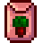
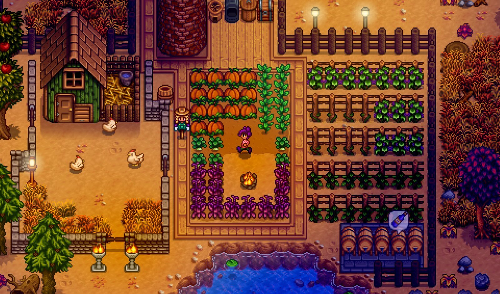

This is your big money maker!
Every season has a different variety of crops. These crops can be bought during their appropriate season in Pierre's, Joja Mart, or special areas around the map!
Spring
Name
Seed
Planted
Harvest
Parsnip
Tulip
Jazz
Garlic
Potato
Green Bean
Kale
Cauliflower
Rhubarb

Strawberry
Coffee Bean
Summer
Name
Seed
Planted
Harvest
Wheat
Hot Pepper
Radish
Summer Spangle
Tomato
Hops
Blueberry
Melon
Poppy
Red Cabbage
Corn
Sunflower
Starfruit

Fall
Name
Seed
Planted
Harvest
Beet
Eggplant
Artichoke
Bok Choy
Grape
Yam
Amaranth
Pumpkin
Fairy Rose
Cranberry
Special Crops
Name
Seed
Planted
Harvest
Ancient Fruit
Sweet Gem Berry
Cactus Fruit